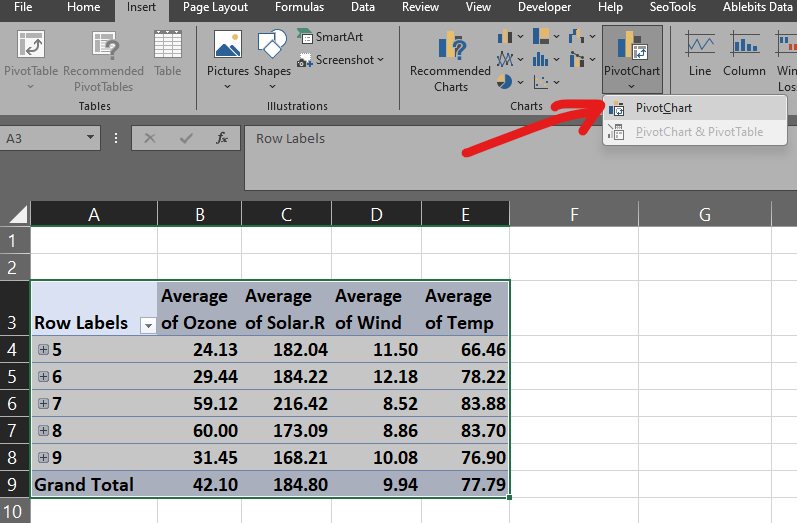

4 National Center for Education Statistics - Chris Jacob
4.1 Week 1 - 08/26 ~ 08/30
4.1.1 Wednesday
4.1.1.1 Diamonds Dataset
I applied the learnings and findings from the Excel Unit to another dataset, the diamonds_ggplot2.csv set. -  - The Diamonds dataset defines the different characteristics of a diamond namely, carat, cut, color, clarity, depth, price, and lengths in the x, y, and z direction The dataset itself did not have any NA values, and hence did not need any additional steps for cleaning the data. An interesting observation to be made was that there are several interesting correlations between the columns that can help us observe some basic trends in the diamond trading business. There were more than 53,000 records collected, and so this dataset is very comprehensive!
- The Diamonds dataset defines the different characteristics of a diamond namely, carat, cut, color, clarity, depth, price, and lengths in the x, y, and z direction The dataset itself did not have any NA values, and hence did not need any additional steps for cleaning the data. An interesting observation to be made was that there are several interesting correlations between the columns that can help us observe some basic trends in the diamond trading business. There were more than 53,000 records collected, and so this dataset is very comprehensive!
4.1.1.1.1 Preparing the dataset
Considering the size of the dataset, I had to use 500 random records to create my visualizations. Here’s a step by step guide on how I did that.
4.1.1.1.1.1 Add a random number column
- Choose a column and add the RAND() function to the column. Double click on the bottom right of the cell to paste the function to the rest of the rows in the dataset. This creates a random number between 0 and 1.

- Next, we apply a filter to the entire dataset, and use the random number column (sorting it from smallest to largest). This automatically rearranges the data records, making the first 500 random.
- Copy the first 500 records to a new sheet. This now becomes your 500 records that give you a true random overview of the Diamonds dataset.

- Since the records didn’t contain any NA values, this looked like the only preparation I needed to do.
{kind=link}
4.1.1.1.1.2 Creating visualizations
Scatter Plot: Carat VS Price
- The first plot I created was a scatter plot that visualized the relationship between the carat of the diamond and the price it would sell at

- From this, we can see that the dimaonds that have a higher carat sell for more.
Histogram: Sum of Price by Color
The next plot I created was a histogram that visualized the relationship between the prices and the color of the diamond.

From this chart, it was clear to see that the diamonds that had the most value were those with the ‘H’ coloration.
Other charts
- When trying to create more visualizations, I observed that not all charts were capable of visualizing this data, and furthermore, given the size of the dataset, all operations were much slower on the online excel sheet.
- I believe the best visualization for such data is the Scatter Plot of Price vs Carats, because it captures the inherent reality that more carats means more price. All in all, it was an interesting start to the class and helped me better understand how visualizations can be achieved on excel.
4.1.2 Friday
4.1.2.1 NCES Education Dataset
NCES Education Dataset is extremely vast and includes several different studies conducted over a range of years. Today, we’ll only be focusing the High School Longitudinal Study of 2009. You can find out more here
The High School Longitudinal Study of 2009 (HSLS:09) is a comprehensive study conducted by the National Center for Education Statistics (NCES). It tracks a cohort of students who began 9th grade in 2009, following them through their high school years and beyond into postsecondary education and the workforce. The study focuses on students’ educational trajectories, especially in STEM, examining factors like course-taking patterns, college aspirations, and career choices. The data collected provides insights into how high school experiences influence long-term educational and career outcomes.
4.1.2.1.1 Working with the datset
- This can be an extremely complicated process. The first step should be to go to the registration page and registering yourself to access all the benefits that NCES datalabs offer.

- This gives us access to the data lab dashboard. Since we can’t use excel because of the extremely large size, so we’ll have to use the datalabs power stats tool for this.
{kind=link}
4.1.2.1.2 Simple Visualization
Considering that I couldn’t use excel for this process, it was interesting to see the amount of data and variables I had at my disposal for this project. For example, just the keyword ‘STEM’ has 294 variables attached to it.
One comparison I made using the PowerStats tool to create a percentage analysis of the relationship between variables S1 and S3.
- S1 looks into how math teachers make math so easy to understand. This is divided as ‘Strongly Agree’, ‘Agree’, ‘Neutral’, ‘Disagree’, ‘Strongly Disagree’
- S3 shows how students might consider STEM as a major.
This visualization further strengthens the premise that teachers are the defining factors in a lot of the future decisions that students make.

- It further allowed me to use the bar chart to show this information visually.

4.1.2.1.3 Inference
- These visualizations make it clear that teachers who help make concepts like math and science easier to understand, help these students choose STEM as a major in university.
- This insight will further add to the ‘STEM Focused’ dataset that I’ll be building during this semester.
4.1.2.2 Conclusion
- Given the vastness of this dataset, I believe it’s important for me to better understand and comprehend this dataset, so that I can fully utilize and appreciate all the data collected. Although I wasn’t able to use Excel on this dataset, the skills learned in the previous classes definitely helped set me up for success with this.
4.2 Week 2 - 09/02 ~ 09/06
4.2.1 Wednesday & Friday
4.2.1.1 Data Analysis & Pivot Techniques
This week, we focused on using pivot tables and pivot charts on the cleaned dataset from last week, to explore relationships between variables in the dataset. Pivot tables allow for a quick and efficient way to summarize, reorganize, and analyze data without needing to manually group or sort data. They provide insights by aggregating data across categories and displaying results in a table format.
- Pivot tables: Help summarize large datasets by grouping them according to key variables, allowing for quick identification of patterns and trends.
- Pivot charts: Visual representations of the data in pivot tables. These charts help communicate the relationships and trends identified in the data through pivot analysis.
Using these tools, we were able to gain deeper insights into the environmental data from the airquality dataset. Key relationships between temperature, wind speed, ozone concentration, and solar radiation were analyzed, leading to findings that provided a better understanding of weather and air quality trends.
4.2.1.2 Context of the AirQuality Dataset
The airquality.csv dataset is a popular dataset that contains information about New York’s air quality measurements recorded in the year 1973. It consists of daily readings of various air quality parameters such as ozone concentration, solar radiation, wind speed, and temperature.
4.2.1.2.1 Key Variables:
- Ozone: The concentration of ozone in parts per billion (ppb).
- Solar.R: Solar radiation in langleys.
- Wind: Wind speed in miles per hour.
- Temp: Temperature in degrees Fahrenheit.
- Month: The month during which the data was recorded (from May to September).
- Day: The day of the month.
This dataset provides valuable insights into how different environmental factors interact over time and can be used to analyze trends related to air pollution and weather patterns.
4.2.1.3 Quick Recap of Data Preprocessing
4.2.1.3.1 Download data
I downloaded a fresh version of the airquality.csv file, and then saved it as a .xlsx file to then manipulate using Excel.

4.2.1.3.2 Clean Data
Since it was a fresh download of the file, we needed to clean the data of any NA values. Here is a high-level overview of the steps we take to achieve this:
Step 1: Apply a filter to the data

Step 2: Filter for all NA data in a column (in this case, Ozone)
Step 3: Delete all the rows with an NA value

{kind=link}
{kind=link}
Now we have a clean dataset that we can use to create pivot tables and pivot charts.
4.2.1.4 Pivot Tables and Insights
4.2.1.4.1 Creating a genearl pivot table
To create a general pivot table, you first select all the data in your dataset as seen below

You then go to the insert tab and click on Pivot Table to insert a pivot table
Here is where you will specify where you want to insert this new table. As suggested by Dr. V, we’ll insert it into a new sheet.

The next step is to select the fields you want to use in your pivot table. These fields can either be dragged and dropped or checked and unchecked. As the names of the boxes suggest, you have the option to add a filter, to add a column, to add a row, or to specify what values you want to use. An interesting point to note here is that you can stack rows and columns, essentially creating a dropdown like effect, making data more manageable and understandable.

Go ahead and select the fields as below

After the fields have been selected, we now have the option to change the value field settings. This means that we can change the kind of data we interpret from the dataset.

In this example, we’re going to change it from the sum to the average values for each field.

As part of ‘prettifying’ our data, let’s decrease the decimal places in our data, to only the 2 decimal places.
After some more prettifying, we end up with the following pivot table, your first pivot table!

{kind=link}
{kind=link}
4.2.1.4.2 Creating your first pivot chart
Now that we have the pivot table, we can create a pivot chart. To do this, the first step would be to select your pivot table and click on Pivot Chart on the insert tab. 
We can then select what type of chart we’d like to use. Excel automatically tells you what are possible and what aren’t possible.
And after choosing the appropriate chart type, bar chart in our case, we have created our first pivot chart. Congratulations

Another interesting thing you can do with pivot charts, is that we can apply filters to the rows and columns on the chart itself.
{kind=link}
{kind=link}
{kind=link}
4.2.1.4.3 Pivot Chart Variations
Now that we know how to create pivot tables and pivot charts, let’s use this knowledge to create comparisons in our dataset to further analyze how these different variables interact with each other.
4.2.1.4.3.1 Pivot Chart 1: Average of Ozone, Solar Radiation, Temperature, Wind by Month and Day
- This is the pivot chart we just created. This chart shows us a few general trends. Specifically:
- Ozone levels seem to correlate with temperature where higher temperatures in July and August correspond with higher ozone concentrations.
- Solar radiation is also highest in the summer months, contributing to higher temperatures, but interestingly, ozone concentrations are lower in September despite similar solar radiation levels.
- Wind speeds decrease as temperatures rise, indicating that calmer wind conditions occur during the hotter summer months, potentially allowing pollutants like ozone to accumulate more in the atmosphere.
{kind=link}
4.2.1.4.3.2 Pivot Chart 2: Average Temp vs Average Ozone by Month
- This pivot chart looks at the average values of temperature vs the average values of ozone by month. The general understanding this gives us is that:
- The ozone concentration increases with rising temperature during the summer months, particularly in July and August.
- After peaking in the summer, both temperature and ozone levels decrease in September, though the decline in ozone levels is more pronounced than the drop in temperature.
- This pattern suggests that while temperature is a significant factor in ozone concentration, other elements such as sunlight intensity and wind speed might also contribute to the sudden drop in ozone levels observed in September.

Pivot table
{kind=link}
4.2.1.4.3.3 Pivot Chart 3: Average Solar Radiation vs Average of Wind speeds by Month
- This pivot chart looks at the average values of solar radiation vs the average values of wind speeds by month. Here are the trends we can observe:
- There is an inverse relationship between solar radiation and wind speed during the summer months. As solar radiation peaks in July, wind speeds drop to their lowest levels. This could be due to more stable weather conditions with fewer disturbances (such as storms) that typically bring stronger winds.
- In the transition months of May and September, the wind speeds are higher, possibly due to more atmospheric variability as seasons change, while solar radiation is moderate.
- The decrease in wind speed during the summer may contribute to higher ozone levels observed in earlier analyses, as calmer winds allow pollutants to accumulate.

Pivot table 
Pivot Chart - 2 trend lines with markers with a secondary axis
4.2.1.4.4 Pivot Chart Conclusion
- There are several different charts that can be made from this simple dataset, which further demonstrates just how powerful the pivot table and pivot chart features are!
- Learning how to use this feature is definitely going to be helpful in my future endeavors with data.
4.2.2 Midterm Project Context
The goal of this midterm project is to analyze data from the High School Longitudinal Study of 2009 (HSLS:09) to explore how early exposure to STEM education affects future career outcomes. The project will focus on: - How students’ interest in STEM subjects during high school influences their college major and career choices. - The role of parents and school environments in shaping STEM aspirations. - (Possible consideration) A comparative analysis of HSLS:09 and other studies such as ELS:2002 and NELS:88 to identify broader educational trends.
This project will aim to answer key questions regarding the role of early STEM education in fostering career readiness and bridging gaps for underrepresented groups in STEM.
4.2.2.1 Introduction to NCES Data Source
The National Center for Education Statistics (NCES) is a key provider of data on education in the U.S., offering a vast array of longitudinal studies, surveys, and tools. The NCES collects comprehensive data that is useful for understanding student pathways, outcomes, and how factors such as socioeconomic status, race, and school characteristics impact education.
4.2.2.1.1 How to Use NCES Data
You can access NCES data at NCES Data Tools. The NCES website offers a range of tools that allow users to: - Download datasets for longitudinal studies such as HSLS:09. - Create custom reports using tools like Data Lab. - Visualize educational trends using tools like the Trend Generator.
4.2.2.2 HSLS Dataset
The High School Longitudinal Study of 2009 (HSLS:09), launched by the National Center for Education Statistics (NCES), provides a rich source of data for educational research. By tracking students from the beginning of high school through postsecondary education and into their careers, HSLS:09 offers valuable insights into student pathways, especially in STEM (Science, Technology, Engineering, Mathematics).
Let’s break down the context of HSLS:09 using the 5 W’s framework to better understand its significance.
4.2.2.2.1 Who?
- Participants: HSLS:09 initially sampled over 23,000 ninth-grade students from 944 high schools across the United States. It also collected data from parents, teachers, counselors, and administrators.
- Demographics: The participants represented a diverse cross-section of students, varying in socioeconomic backgrounds, ethnicities, and geographic locations.
- Stakeholders: Aside from students, the survey data also involves insights from educators and family members, making it a comprehensive longitudinal study.
4.2.2.2.2 What?
- Scope: The HSLS:09 focuses on understanding students’ educational choices, performance, and postsecondary transitions. One of the study’s unique features is its emphasis on STEM education and career trajectories. Cognitive assessments were administered alongside surveys to measure student aptitude in mathematics and science.
- Data Collected: The study captures a wide range of data, including academic achievement, cognitive tests, postsecondary aspirations, parental influence, school characteristics, and career goals.
- Assessment: The students underwent math assessments in the ninth grade, and their progress was tracked through follow-up surveys in 2012, 2016, and beyond.
4.2.2.2.3 Where?
- Geographic Coverage: The survey covered high schools throughout the United States, including urban, suburban, and rural areas. This allowed for a broad understanding of educational experiences across different geographic and socioeconomic environments.
- Postsecondary Transitions: The follow-up surveys track students as they transition into a variety of postsecondary environments, including two- and four-year colleges, vocational programs, and directly into the workforce.
4.2.2.2.4 When?
- Initial Data Collection: The study began in 2009 when the participants were in ninth grade. Subsequent data collection points occurred in 2012, 2013, 2016, and more recently, following students through their postsecondary education and career entry phases.
- Longitudinal Approach: HSLS:09 is designed to track participants over an extended period, providing insights into the long-term effects of high school experiences on educational attainment and career success.
4.2.2.2.5 Why?
- STEM Emphasis: A primary goal of HSLS:09 is to understand how high school experiences, especially in STEM fields, influence later educational and career outcomes. The study explores what motivates students to pursue careers in STEM and what barriers may exist, such as socioeconomic factors or lack of resources.
- Educational Equity: Another key objective is to assess educational equity. HSLS:09 allows researchers to examine disparities in student experiences based on race, gender, socioeconomic status, and geographic location, providing a wealth of information for policymakers.
- Policy Implications: The data serves as a foundation for designing interventions that can address gaps in education, particularly for underrepresented groups in STEM.
4.2.2.2.6 How?
- Methodology: HSLS:09 uses a combination of surveys, cognitive assessments, and follow-up interviews to gather data. The study includes input from students, parents, educators, and administrators, creating a holistic view of each student’s educational journey.
- Analysis Frameworks: Researchers use the HSLS:09 data to conduct both quantitative and qualitative analyses. The longitudinal design enables researchers to look at changes over time, such as shifts in career aspirations or academic performance.
4.2.2.2.7 Conclusion
The HSLS:09 dataset offers invaluable insights into the educational trajectories of U.S. high school students, with a particular focus on STEM fields. The data gathered from this study can be used to develop strategies that support student success, particularly in underrepresented communities. For this midterm project, analyzing this dataset allows us to explore key questions about educational pathways, parental influence, and career readiness, providing a solid foundation for research in educational policy and student development.
4.3 Week 3 - 09/09 ~ 09/13
4.3.1 Wednesday
I decided to use the Violent Crime Rates by US State, otherwise known as the USArrests dataset. Here’s some key information about the USArrests dataset.
4.3.1.1 Description
This data set contains statistics, in arrests per 100,000 residents for assault, murder, and rape in each of the 50 US states in 1973. Also given is the percent of the population living in urban areas.
4.3.1.2 Format
A data frame with 50 observations on 4 variables.
- Murder numeric Murder arrests (per 100,000)
- Assault numeric Assault arrests (per 100,000)
- UrbanPop numeric Percent urban population
- Rape numeric Rape arrests (per 100,000)
4.3.1.3 Notes
USArrests contains the data as in McNeil’s monograph. For the UrbanPop percentages, a review of the table (No. 21) in the Statistical Abstracts 1975 reveals a transcription error for Maryland (and that McNeil used the same “round to even” rule that R’s round() uses), as found by Daniel S Coven (Arizona).
4.3.1.4 Source
World Almanac and Book of facts 1975. (Crime rates).
Statistical Abstracts of the United States 1975, p.20, (Urban rates), possibly available as https://books.google.ch/books?id=zl9qAAAAMAAJ&pg=PA20
4.3.1.5 References
McNeil, D. R. (1977) Interactive Data Analysis. New York: Wiley.
4.3.1.6 Tableau Dashboard
This is the dashboard created for the USArrests dataset on tableau. Tableau was fairly easy to use and the USArrests dataset was easy to import and implement.

Here’s some insights from the tableau dashboard
4.3.1.6.1 Comparison of Variables - Observations

4.3.1.6.1.1 Key Insights from the Chart:
- Urban Population Dominates:
- The urban population (represented in teal) is significantly higher compared to the crime-related measures (murder, rape, and assault) in all states.
- States like California, Florida, and New York have noticeably high urban populations, reflecting their dense urban areas.
- Assault is the Most Prominent Crime:
- Among the crime-related variables, assault (in blue) has the highest values across most states compared to murder and rape.
- States like California, Florida, and Texas show higher assault rates than smaller or less populated states.
- Murder and Rape Trends:
- Murder (red) and rape (green) have lower values compared to assault.
- Certain states, such as Texas and Florida, show moderate increases in both murder and rape rates compared to other states.
- State Comparisons:
- New York, California, Texas, and Florida are outliers in terms of high urban population and assault rates, while smaller states like Rhode Island, Vermont, and North Dakota have much lower values across all variables.
- General Trends:
- In general, states with larger urban populations tend to have higher crime rates, particularly assaults. However, the murder and rape rates don’t show as sharp an increase, suggesting that assault is more widely reported or prevalent compared to murder and rape in many states.
4.3.1.6.1.2 Overall Observations:
- Urbanization and Crime:
- There’s a clear pattern showing that states with larger urban populations also tend to report higher crime rates, especially assault. This could be due to factors like higher population density, socioeconomic conditions, or more effective reporting mechanisms.
- Assault:
- The prominence of assault across all states suggests it may be the most common form of violent crime, while murder and rape remain lower.
4.3.1.6.2 Murder & Assault Comparison - Observations
4.3.1.6.2.1 Key Observations:
- Top States with High Assault and Murder Rates:
- Florida, North Carolina, Maryland, and Arizona are at the top of the list, indicating that these states have the highest combined average rates of murder and assault.
- These states likely face a combination of socioeconomic factors, larger urban populations, or more prevalent crime, resulting in higher overall violent crime rates.
- Mid-Ranking States:
- States like California, Mississippi, Alaska, Michigan, New York, Louisiana, and Nevada fall in the middle range of the rankings. These states still have higher than average violent crime rates but are not at the extreme end like Florida or North Carolina.
- The presence of larger states like California and New York here suggests that while they are populous and urbanized, their combined violent crime rates are relatively controlled when compared to states like Florida.
- Lower Crime Rate States:
- Iowa, Wisconsin, Hawaii, Vermont, and North Dakota rank at the bottom of the chart, indicating significantly lower combined rates of murder and assault.
- States like Vermont and North Dakota are typically less populated and more rural, which may contribute to their lower violent crime rates. This suggests that crime in these states may be less of a social concern.
- State-wise Trends:
- Southern and Eastern states like Florida, North Carolina, and Maryland tend to have higher violent crime rates, as opposed to Midwestern and Northern states like North Dakota, Vermont, and Minnesota, which generally report lower rates.
- This pattern could reflect regional socioeconomic disparities, population density, or differences in law enforcement efficacy.
- General Trend:
- States with larger urban populations and economic challenges seem to rank higher on the combined assault and murder rates.
- On the other hand, smaller, more rural states with lower population densities have less violent crime overall.
4.3.1.6.2.2 Conclusion:
- Florida stands out as the state with the highest combined average of murder and assault rates, potentially indicating broader societal challenges in terms of violence and crime control.
- The Southern and Eastern U.S. regions tend to show higher violent crime rates, whereas Midwestern and Northern regions demonstrate much lower combined murder and assault rates.
- State size and urbanization do not necessarily guarantee higher crime rates, as demonstrated by California and New York’s middle placement in the chart.
This chart provides a comprehensive view of how different U.S. states compare in terms of violent crime rates, offering valuable insights into which regions face more crime-related challenges and which regions enjoy greater safety.
4.3.1.6.3 Assault VS Crime Comparisons - Observations

4.3.1.6.3.1 Breakdown and Insights:
- Assault vs Murder (Left Plot - Green)
- Trend: There is a positive correlation between murder rates and assault rates. States with higher murder rates also tend to have higher assault rates. The points generally follow an upward trend as the murder rate increases.
- Outliers: Some states, however, have relatively high assault rates but lower murder rates, and vice versa. This could indicate differences in the nature of violent crimes across certain states.
- Key Insight: States with higher murder rates are more likely to experience higher assault rates as well, reflecting an overall violent crime environment.
- Assault vs Rape (Middle Plot - Red)
- Trend: There is also a positive correlation between assault and rape, although it appears less consistent than the correlation between murder and assault.
- Variation: Some states have very high rape rates but relatively lower assault rates and vice versa. This suggests that these two types of violent crime might not always overlap to the same extent.
- Key Insight: While there is some correlation between rape and assault rates, the variation suggests that states may experience different patterns in the prevalence of these two crimes.
- Assault vs Urban Population (Right Plot - Blue)
- Trend: As expected, there is a positive correlation between the size of the urban population and assault rates. More densely populated states or those with large urban centers tend to report higher assault rates.
- Key Insight: Urbanization plays a significant role in the prevalence of assault crimes. States with larger urban populations often face more challenges related to violent crimes like assault.
4.3.1.6.3.2 General Observations:
- Overall Correlation: Assault seems to correlate positively with other violent crimes (murder and rape), but the strongest relationship is with murder rates.
- Urbanization Impact: The third plot clearly demonstrates that higher urban populations are associated with higher assault rates, indicating that population density could be a major contributing factor to crime rates.
This chart provides a detailed look at how assault correlates with murder, rape, and urban population, showing that violent crimes tend to increase together, especially in more urbanized areas.
4.3.1.6.4 High Crime VS Low Crime Observations
4.3.1.6.4.1 Key Insights:
- States with Predominantly High Crime Rates:
- States like Alabama, Alaska, Arizona, Arkansas, and Florida show high overall crime severity (with larger blue bars), indicating that these states tend to experience more severe crime issues.
- In these states, the high crime rates dominate, suggesting that these states might face significant challenges in curbing violent or severe crimes.
- States with Balanced Crime Severity:
- Some states, such as Indiana, Illinois, Iowa, Kentucky, and Maine, show a more balanced distribution between high and low crime severity. The orange and blue bars are more evenly distributed, suggesting a mix of both high and low severity crimes.
- This could indicate that while these states experience some severe crimes, they also have a significant portion of lower-severity crimes, perhaps petty crimes or less violent offenses.
- States with Predominantly Low Crime Rates:
- States like Nebraska, Vermont, and Wyoming show higher low-crime severity (with larger orange bars), indicating that these states experience fewer high-severity crimes. The majority of crimes in these states are less severe, suggesting generally safer environments.
- These states may prioritize law enforcement for less severe crimes or have social factors that mitigate more violent crimes.
- Regional Trends:
- Southern states such as Alabama, Louisiana, and Mississippi show higher overall crime severity, with high crime significantly outweighing low crime.
- Northern and Midwestern states like Minnesota, Michigan, and Vermont seem to have much lower crime severity, especially in terms of high-severity crimes.
- Total Crime Severity:
- States like California, Florida, Illinois, and Texas stand out for having relatively high overall crime severity, with significant portions of both high and low crime. These states have large populations, which might account for the overall crime volume.
- Vermont and Wyoming, on the other hand, show the lowest overall crime severity, indicating these states are among the safest in the country in terms of crime levels.
4.3.1.6.4.2 General Observations:
- High vs. Low Crime Split: The split between high and low crime provides a clear comparison of the types of crimes affecting each state. States with a larger high crime bar indicate more severe criminal issues, whereas those with larger low crime bars may experience primarily less serious offenses.
- Outliers: Some states, like Florida and Illinois, show both high levels of crime severity across the board, indicating that while they face challenges with serious crime, they also have a substantial amount of less severe crime.
This chart provides a comprehensive look at how crime severity varies across states, giving a clearer picture of the types of crimes that dominate in different regions.
4.3.1.7 Conclusion
4.3.1.7.1 Key Conclusions Based on Crime Trends and Patterns Across U.S. States:
- Correlation Between Different Violent Crimes:
- Across all charts, there is a consistent positive correlation between different types of violent crimes, especially between murder and assault. States with higher rates of one violent crime tend to have higher rates of others.
- Assault emerges as a dominant crime in most states, correlating strongly with other violent crimes such as murder and rape. This suggests that regions facing assault issues may also struggle with broader violent crime challenges.
- Urbanization and Crime:
- There is a clear link between urban population size and higher crime rates, particularly with assault. States with larger urban populations tend to report more violent crimes. This trend is evident in the scatter plots comparing assault rates to urban population size.
- States like Florida, California, and Texas, with their large urban centers, display both higher overall crime severity and more violent crime rates. This highlights the challenges faced by densely populated states in controlling violent crime.
- High and Low Crime Severity:
- Certain states, like Florida, Arizona, and North Carolina, consistently rank high in both violent crime rates and crime severity, indicating significant challenges in addressing both high- and low-severity crimes.
- Conversely, states like Vermont, Wyoming, and North Dakota show very low crime severity and lower violent crime rates overall, suggesting safer environments with fewer serious criminal offenses.
- Regional Crime Trends:
- Southern and Western states tend to face greater crime challenges, particularly with violent crimes like assault and murder. These regions often rank higher in both crime rates and severity.
- Midwestern and Northern states such as Vermont, Iowa, and Minnesota typically report lower violent crime rates and severity, suggesting that these areas may benefit from a combination of social stability, effective law enforcement, or less urbanization.
4.3.1.7.2 Final Conclusion:
States with larger urban populations, especially in the South and West, experience higher crime rates, particularly violent crimes like assault and murder. Assault is a prevalent issue, often correlating with other violent crimes, and more densely populated states tend to face higher crime severity overall. On the other hand, more rural or less densely populated states, especially in the Midwest and North, experience fewer violent crimes and lower crime severity, making them generally safer.
This analysis highlights the significant role that urbanization, regional differences, and socio-economic factors play in shaping crime patterns across the U.S.
4.3.2 Friday
Working off of the NCES data, here’s an overview of the dataset.
4.3.2.0.1 Dataset - HSLS Data
The dataset is drawn from the High School Longitudinal Study of 2009 (HSLS:09), which tracks a cohort of students who entered 9th grade in the fall of 2009. The study captures detailed data on students’ academic achievements, interests, attitudes, and family and school characteristics, with a particular focus on STEM (Science, Technology, Engineering, Mathematics) fields. The dataset includes measures on math and science performance, parental occupation, student demographics, and self-reported attitudes towards STEM subjects.
4.3.2.1 Data Source
- Source: The dataset originates from the National Center for Education Statistics (NCES), a U.S. government organization that collects and analyzes educational data. The data is publicly available through NCES’s website and is widely used for educational research and policy evaluation.
- Survey: HSLS:09, a comprehensive survey of U.S. high school students with follow-ups tracking their progress through high school, into postsecondary education, and into the workforce.
4.3.2.2 30 Columns and Randomized Data
We meticulously selected 30 columns and selected 250 rows of randomized data representing key aspects of STEM participation, demographic factors, academic performance, and parental influence to analyze the impact of various factors on students’ STEM trajectories. These columns were chosen to enable analysis of the relationships between student performance in STEM subjects, family background, self-perception, and eventual aspirations in STEM careers.
4.3.2.3 The 5 W’s Breakdown
4.3.2.3.1 1. Who (Who does the data represent?)
- Who: The data represents students who began 9th grade in 2009 in public and private schools across the United States. It includes information on the students, their families, teachers, and schools.
- Population: The dataset covers a diverse cross-section of U.S. students, including different races, income levels, genders, and academic achievements.
4.3.2.3.2 2. When (When was the data collected?)
- When: The baseline data collection occurred in 2009, with follow-up surveys conducted later as the students progressed through high school and beyond. This timeline allows us to observe students’ academic growth and career trajectories.
- Specific Timeframes:
- Baseline: Fall 2009 (9th grade).
- Follow-up waves: Conducted in subsequent years to track academic progress and STEM involvement.
4.3.2.3.3 3. Where (Where was the data collected?)
- Where: The dataset covers schools in the United States across various regions, including urban, suburban, and rural areas. The dataset includes school-level identifiers, allowing for analysis of geographic or school-specific trends in STEM education.
- Schools: Public and private schools in different locales (urban, suburban, and rural).
4.3.2.3.4 4. What (What does the dataset include?)
- What: The dataset includes a wide range of variables on student academic performance, demographic information, family background, school resources, and student attitudes towards STEM subjects.
- Key Data Fields:
- Demographics: Student gender (X1SEX), race/ethnicity (X1RACE), family income (X1FAMINCOME), and parental education (X1PAREDU).
- STEM Participation: Interest in math (X1MTHINT) and science (X1SCIINT), math self-efficacy (X1MTHEFF), parental occupation in STEM fields (X1PAR1OCC_STEM1), and more.
- Performance: Math and science test scores (X1TXMTH, X1SCIEFF), proficiency levels (X1TXMPROF1 to X1TXMPROF5), and school engagement (X1SCHOOLENG).
- Parental Influence: Parental occupation and education levels (X1PAREDU, X1PAR1OCC_STEM1).
- Key Data Fields:
4.3.2.3.5 5. Why (Why was the data collected? Why are we analyzing these columns?)
- Why: The HSLS:09 dataset was collected to understand how students’ academic experiences, particularly in STEM fields, evolve over time. It explores how family background, school resources, and self-perceptions affect students’ performance and career aspirations, especially in STEM-related fields.
- Purpose of Analysis:
- To analyze: The chosen columns allow us to study the relationship between student demographics (gender, race), academic performance in math and science, and future STEM aspirations.
- To uncover: How parental STEM occupations or educational backgrounds influence students’ interest and success in STEM, and whether specific demographic groups are underrepresented in STEM participation.
- Purpose of Analysis:
4.3.2.3.6 6. How (How is the data structured and how will we use it?)
- How: The dataset is structured into variables representing both categorical (e.g., gender, race) and continuous (e.g., math scores, family income) data. The data is collected from students, their parents, schools, and teachers.
- Data Analysis:
- We will use Tableau for visualizations that can help correlate STEM performance with demographic variables, family influences, and student self-efficacy in math and science.
- Calculated fields and parameters in Tableau will be used to explore relationships such as math/science interest over different income levels, race, and gender.
- Data Analysis:
4.3.2.4 Use of the Data
- Here are some questions we’ll be answering:
- Are students from higher-income families more likely to pursue STEM careers?
- How does parental occupation in STEM fields influence a student’s math and science performance?
- What are the disparities in STEM participation across different racial/ethnic groups?
- How does self-efficacy in math affect student interest in STEM subjects?
4.3.2.5 Conclusion
The chosen 30 columns provide a comprehensive view of student, family, and school characteristics, making it possible to explore STEM participation trends through factors such as demographics, academic performance, family influence, and self-perception. By leveraging these insights, we aim to identify gaps in STEM education and propose strategies to increase participation among underrepresented groups.
4.3.2.5.1 Data Columns Chosen
Before we move on to the tableau dashboard, here are the columns chosen:
4.3.2.5.1.1 1. SCH_ID – School ID
- Range: Unique numeric identifiers for each school.
- Interpretation: Each ID corresponds to a specific school, enabling differentiation in the dataset.
4.3.2.5.1.2 2. X1NCESID – School Identification Number from CCD or PSS
- Range: Numeric IDs assigned to schools from official databases.
- Interpretation: Identifies schools using official government databases like the Common Core of Data (CCD).
4.3.2.5.1.3 3. W1MATHTCH – Base Year Math-Course Enrollee Weight
- Range: Continuous values (e.g., 200-500).
- Interpretation: Weight applied to students enrolled in math courses to ensure the sample is representative.
4.3.2.5.1.4 4. W1SCITCH – Base Year Science-Course Enrollee Weight
- Range: Continuous values (e.g., 150-450).
- Interpretation: Weight applied to students enrolled in science courses for representativeness.
4.3.2.5.1.5 5. W3HSTRANS – High School Transcript Weight
- Range: Continuous values.
- Interpretation: A weight used for students included in the high school transcript study, ensuring representativeness.
4.3.2.5.1.6 6. X1SEX – Student’s Sex
- Range: 1 = Male, 2 = Female.
- Interpretation: Binary variable representing the student’s gender.
4.3.2.5.1.7 7. X1RACE – Student’s Race/Ethnicity Composite
- Range: Categorical:
- 1 = White
- 2 = Black or African American
- 3 = Hispanic or Latino
- 4 = Asian
- 5 = Native Hawaiian/Pacific Islander
- 6 = American Indian/Alaska Native
- 7 = Two or More Races
- Interpretation: Represents the student’s racial/ethnic background.
4.3.2.5.1.8 8. X1TXMTH – Math Theta Score
- Range: Continuous (typically -1.5 to 3.5).
- Interpretation: Measures math ability based on a standardized test. Higher scores reflect higher ability.
4.3.2.5.1.9 9. X1TXMSEM – Math Standard Error of Measurement (SEM)
- Range: Continuous (e.g., 0.1-0.4).
- Interpretation: Indicates the degree of uncertainty or error in the math theta score.
4.3.2.5.1.10 10. X1TXMSCR – Math IRT-Estimated Number Right Score
- Range: Continuous (e.g., 20-80).
- Interpretation: Estimated number of correct answers a student would have obtained on a math test.
4.3.2.5.1.11 11. X1TXMTSCOR – Math Standardized Theta Score
- Range: Continuous, similar to X1TXMTH.
- Interpretation: Standardized measure of math ability across students in the dataset.
4.3.2.5.1.12 12. X1TXMQUINT – Math Quintile Score
- Range: 1 to 5.
- Interpretation: Divides students into quintiles based on their math performance, with 5 representing the highest achievers.
4.3.2.5.1.13 13. X1TXMPROF1 – Math Proficiency Probability (Basic Math Skills)
- Range: Continuous (0 to 1).
- Interpretation: Probability that the student is proficient in basic math skills.
4.3.2.5.1.14 14. X1TXMPROF2 – Math Proficiency Probability (Simple Equations)
- Range: Continuous (0 to 1).
- Interpretation: Probability that the student is proficient in solving simple equations.
4.3.2.5.1.15 15. X1TXMPROF3 – Math Proficiency Probability (Multi-Step Equations)
- Range: Continuous (0 to 1).
- Interpretation: Probability that the student is proficient in solving multi-step equations.
4.3.2.5.1.16 16. X1TXMPROF4 – Math Proficiency Probability (Algebra)
- Range: Continuous (0 to 1).
- Interpretation: Probability that the student is proficient in algebra.
4.3.2.5.1.17 17. X1TXMPROF5 – Math Proficiency Probability (Advanced Algebra)
- Range: Continuous (0 to 1).
- Interpretation: Probability that the student is proficient in advanced algebra.
4.3.2.5.1.18 18. X1PAR1OCC_STEM1 – Parent 1’s STEM Occupation (Type 1)
- Range: 1 = Yes, -5 = Not Applicable.
- Interpretation: Indicates if Parent 1 works in a STEM-related occupation.
4.3.2.5.1.19 19. X1PAR1OCC_STEM2 – Parent 1’s STEM Occupation (Type 2)
- Range: 1 = Yes, -5 = Not Applicable.
- Interpretation: A secondary category for Parent 1’s STEM-related occupation.
4.3.2.5.1.20 20. X1PAR2OCC_STEM1 – Parent 2’s STEM Occupation (Type 1)
- Range: 1 = Yes, -5 = Not Applicable.
- Interpretation: Indicates if Parent 2 works in a STEM-related occupation.
4.3.2.5.1.21 21. X1PAR2OCC_STEM2 – Parent 2’s STEM Occupation (Type 2)
- Range: 1 = Yes, -5 = Not Applicable.
- Interpretation: A secondary category for Parent 2’s STEM-related occupation.
4.3.2.5.1.22 22. X1PAREDU – Parent’s Highest Level of Education
- Range: Categorical:
- 1 = Less than high school
- 2 = High school diploma
- 3 = Some college
- 4 = Associate’s degree
- 5 = Bachelor’s degree
- 6 = Master’s degree
- 7 = Doctorate or professional degree
- Interpretation: Highest level of education attained by the parents.
4.3.2.5.1.23 23. X1FAMINCOME – Family Income (2008)
- Range: Categorical:
- 1 = Less than $10,000
- 10 = $90,000 or more
- Interpretation: Family’s total income in 2008, grouped into categories.
4.3.2.5.1.24 24. X1MTHID – Math Identity (Self-Perception in Math)
- Range: Continuous (-2 to 2).
- Interpretation: Reflects how much a student identifies with being “good at math” or sees math as part of their identity.
4.3.2.5.1.25 25. X1MTHUTI – Perceived Math Utility
- Range: Continuous (-2 to 2).
- Interpretation: Measures how useful the student perceives math to be in their life.
4.3.2.5.1.26 26. X1MTHEFF – Math Self-Efficacy
- Range: Continuous (-2 to 2).
- Interpretation: Reflects the student’s confidence in their math abilities.
4.3.2.5.1.27 27. X1MTHINT – Interest in Math
- Range: Continuous (-2 to 2).
- Interpretation: Measures the student’s interest in math as a subject.
4.3.2.5.1.28 28. X1SCIUTI – Perceived Science Utility
- Range: Continuous (-2 to 2).
- Interpretation: How useful the student perceives science to be in their life.
4.3.2.5.1.29 29. X1SCIEFF – Science Self-Efficacy
- Range: Continuous (-2 to 2).
- Interpretation: Reflects the student’s confidence in their science abilities.
4.3.2.5.1.30 30. X1SCIINT – Interest in Science
- Range: Continuous (-2 to 2).
- Interpretation: Measures the student’s interest in science.
4.3.2.5.2 Tableau Dashboard
Here’s the dashboard I created on Tableau using the data.

4.3.2.5.3 Student Sex VS Parent STEM Occupation Visualization
This visualization illustrates the relationship between the gender of students and the type of STEM occupation their parents have. Below are the key insights derived from the visualization:
4.3.2.5.3.1 Key Insights:
- Parent Occupation Type 0 Dominates:
- The majority of students have parents in Occupation Type 0, where most data points are concentrated.
- Within this category, there is a significant count of both male and female students (represented by different shades of brown and orange), with a relatively balanced distribution between genders.
- Sparse Representation in Other Occupation Types:
- For Occupation Types 4 and 5, there is a much smaller number of students, indicating that fewer parents in these categories work in STEM occupations.
- The counts are notably lower, especially when compared to Occupation Type 0.
- Gender Distribution:
- The gender distribution appears relatively even in the dominant category (Occupation Type 0). However, as we move to other occupation types, the data becomes sparser, making it harder to discern strong gender-based trends.
- In Occupation Type 4, there seems to be a slight skew towards male students, although the sample size is relatively small.
- Implications for Parent Influence:
- The strong presence of students associated with Parent Occupation Type 0 suggests that most students have parents who may not be specifically involved in STEM occupations or belong to a general category that includes STEM-adjacent roles.
- The smaller representation in other occupation types might indicate that parents in more specialized STEM roles have fewer children, or those children are underrepresented in this dataset.
4.3.2.5.3.2 Conclusion:
This visualization highlights the strong influence of parents in Occupation Type 0 on students, regardless of gender. There is a relatively balanced gender representation in this dominant category, but in the smaller STEM-specific occupation categories, there are fewer students overall. This could point to either a lack of representation in STEM fields for certain types of occupations or simply fewer parents in these roles.
4.3.2.5.4 Race VS Math Score Visualization
In this visualization, we analyze the performance of various racial groups on their average math scores using the provided race categories. Here’s the breakdown based on the race list:
4.3.2.5.4.1 Insights:
- Race 4 (Hispanic, no race specified):
- Hispanic (no race specified) students show the most significant negative deviation, with an average math score well below zero. This indicates that this group is underperforming significantly in math compared to others.
- The drop in math scores for this group may highlight educational or socioeconomic disparities affecting their performance.
- Race 2 (Asian, non-Hispanic):
- Asian, non-Hispanic students are performing slightly above average in math. This group shows a small positive deviation, indicating that they are outperforming other racial groups on average.
- This aligns with general trends observed in educational datasets where Asian students often excel in math-related subjects.
- Race 3 (Black/African-American, non-Hispanic):
- Black/African-American, non-Hispanic students show a small negative deviation from the average. While they underperform in math compared to other racial groups, the deviation is not as drastic as the Hispanic (no race specified) group.
- This performance may reflect challenges related to access to resources, educational opportunities, or broader social factors.
- Race 8 (White, non-Hispanic):
- White, non-Hispanic students show minimal deviation from the average math score, suggesting that their performance is close to the overall mean.
- This indicates that White, non-Hispanic students are generally performing at or around the national average in math.
- Race 5 (Hispanic, race specified):
- There are fewer significant trends for Race 5, but there may be a smaller negative deviation for Hispanic students whose race is specified.
- This suggests that while both groups of Hispanic students (Race 4 and 5) underperform, those with a specified race perform slightly better than those with an unspecified race.
4.3.2.5.4.2 General Observations:
- Hispanic Students (Race 4) are struggling the most with math performance, while Asian Students (Race 2) show the best results, performing above average.
- Black/African-American students (Race 3) perform slightly below average, while White students (Race 8) remain close to the average performance.
- The visualization highlights racial disparities in math education and suggests potential areas for further investigation, such as how socio-economic status or educational resources may impact these differences.
4.3.2.5.4.3 Conclusion:
This analysis sheds light on how different racial groups perform in math and suggests that targeted interventions may be needed to address the performance gap, particularly for Hispanic students.
4.3.2.5.5 Parent Education Level VS STEM Interest (Math & Science) Visualization


This analysis focuses on two scatter plot visualizations: Math Interest and Science Interest. Each visualization shows the relationship between students’ interest in STEM subjects (math and science) and their parent’s highest level of education.
4.3.2.5.5.1 Parent Education Levels:
- 1: Less than high school
- 2: High school diploma or GED
- 3: Associate’s degree
- 4: Bachelor’s degree
- 5: Master’s degree
- 7: Ph.D./M.D./Law/Other high-level professional degree
4.3.2.5.5.2 Math Interest:
In the first visualization, the vertical axis represents the calculated/standardized interest in math, while the horizontal axis shows the parent’s highest level of education. Higher values on the vertical axis represent greater interest in math.
Key Insights:
Concentration Around GED and Bachelor’s Degree (Levels 2 and 4):
- There is a notable concentration of data points at education levels 2 (high school diploma or GED) and 4 (bachelor’s degree), suggesting that most students with parents at these education levels show a range of math interest values.
- The majority of the data points are spread between -0.5 and +0.5, suggesting average math interest, regardless of parental education level for these categories.
Outliers in PhD/Professional Degree (Level 7):
- A few outliers show extremely high interest in math among students whose parents have achieved higher professional degrees (level 7). This indicates that students with highly educated parents may show greater interest in math.
- However, there are also students in this category with negative math interest, indicating that parent education alone may not be a definitive predictor of math interest.
Overall Spread:
- Most students fall between -1 to +1 on the math interest scale, with no dramatic spikes or drops. The relationship between parent education and math interest appears moderate, but students with higher-educated parents (levels 4-7) show more positive trends.
4.3.2.5.5.3 Science Interest:
In the second visualization, the vertical axis represents science interest, and the horizontal axis shows parent education levels. The structure is similar to the math interest plot, with higher values representing greater interest in science.
Key Insights:
Broad Spread of Interest:
- The science interest values show a broader distribution compared to math, with many students clustered between -0.5 to 0.5, but also some outliers reaching up to +2.
- Similar to math interest, parent education levels 2 (GED) and 4 (bachelor’s degree) dominate in terms of data points.
More Positive Interest for Higher Parent Education:
- Students with parents holding higher degrees (levels 4-7) generally display positive science interest. Many fall near the average, but there is a cluster of students with significantly higher interest.
- Students with parents holding Ph.D. or professional degrees (level 7) also show a range of interest, with some outliers exhibiting higher science interest.
Less Impact for Lower Education Levels:
- The lower education levels (1 to 3) have fewer students with high interest in science. The interest levels tend to hover around the zero mark, suggesting neutral or average interest in science.
4.3.2.5.5.4 General Observations:
- Higher parental education (levels 4-7) tends to correlate with slightly increased interest in both math and science, particularly for students whose parents hold bachelor’s degrees or higher.
- While there is a concentration of average interest in both subjects, the presence of outliers shows that highly educated parents may foster greater interest in STEM.
- Lower education levels (1 to 3) correspond with more neutral or average interest in both subjects. There isn’t a dramatic decline in interest among students from these education backgrounds, but the positive trend is more prominent among higher-educated parents.
4.3.2.5.5.5 Conclusion:
The scatter plots show a moderate but positive relationship between parent education levels and student interest in STEM fields. Higher parental education levels are associated with greater interest in math and science, particularly for parents holding bachelor’s degrees or higher. However, the data also suggests that parent education level alone is not the sole determinant of student interest in STEM.
4.3.2.5.6 Family Income VS Math Proficiency Visualization

This analysis focuses on the relationship between family income and math proficiency using a treemap. Below are insights based on the income categories provided.
4.3.2.5.6.1 Income Categories:
- Category 1: Family income ≤ $15,000
- Category 2: Family income > $15,000 and ≤ $35,000
- Category 3: Family income > $35,000 and ≤ $55,000
- Category 4: Family income > $55,000 and ≤ $75,000
- Category 5: Family income > $75,000 and ≤ $95,000
- Category 6: Family income > $95,000 and ≤ $115,000
- Category 7: Family income > $115,000 and ≤ $135,000
- Category 8: Family income > $135,000 and ≤ $155,000
- Category 9: Family income > $155,000 and ≤ $175,000
- Category 10: Family income > $175,000 and ≤ $195,000
- Category 11: Family income > $195,000 and ≤ $215,000
- Category 12: Family income > $215,000 and ≤ $235,000
- Category 13: Family income > $235,000
4.3.2.5.6.2 Key Insights:
- Higher Income Groups:
- Categories 9, 5, and 10 (representing higher-income brackets between $75,000 and $195,000) occupy larger areas in the treemap and are shaded in blue, representing higher overall proficiency in math.
- Families with incomes higher than $75,000 are associated with better math proficiency, with category 9 (income > $155,000 and ≤ $175,000) standing out for better performance.
- Lower Income Groups:
- Categories 1, 2, 3, and 4 (representing family incomes up to $75,000) are shown in orange and red, indicating lower math proficiency scores.
- Category 1 (income ≤ $15,000) shows the lowest math proficiency, suggesting a clear relationship between lower family income and lower math proficiency.
- Moderate Income Groups:
- Categories like 6, 7, and 8 (income > $95,000 and ≤ $155,000) are shown in light blue, indicating moderate proficiency in math. Students from these income levels perform better than those in the lower income brackets but slightly worse than those in the highest income categories.
- Top Income Category:
- Category 13 (family income > $235,000) is shaded in light blue, showing that even at the very top income level, proficiency is high but not the highest. This suggests that beyond a certain income threshold, the impact of family income on math proficiency levels off.
4.3.2.5.6.3 General Observations:
- Strong Positive Correlation Between Family Income and Math Proficiency:
- Higher family income is clearly associated with better performance in math. As family income increases, students’ math proficiency improves, indicating that socioeconomic factors such as access to resources, tutoring, or educational opportunities may play a significant role.
- Lower Income Students Struggle More:
- Students from lower-income families (especially in categories 1 through 4) tend to have lower proficiency in math. These students may face challenges in education due to limited access to resources or support outside the classroom.
4.3.2.5.6.4 Conclusion:
The treemap visualization emphasizes the importance of family income in determining math proficiency. Students from higher-income families generally perform better in math, while those from lower-income brackets tend to struggle. This suggests that addressing socioeconomic disparities could have a significant impact on improving math proficiency among students from lower-income families.
4.3.2.5.7 Student Sex VS Math Self-Efficacy Visualization
In this visualization, we analyze the distribution of math self-efficacy across student gender (1 = male, 2 = female) while also considering student race as an additional variable (indicated by color).
4.3.2.5.7.1 Key Insights:
- General Trends in Math Self-Efficacy:
- Males (Student Sex = 1) show a broad range of math self-efficacy scores, with values ranging from -100 to +20. There is more spread across the scale, with both high and low self-efficacy scores represented.
- Females (Student Sex = 2) display a similar distribution in math self-efficacy, ranging from -110 to +20, suggesting that both genders have a similar overall spread of math self-efficacy.
- Race Influence on Self-Efficacy:
- Race categories are depicted using colors. The blue-shaded students (higher values like White/Asian) tend to show higher math self-efficacy, particularly at the higher end of the scale.
- Students from Race 3 (Black/African-American) and Race 2 (Asian) show different shades, with Race 2 students more represented in the higher math self-efficacy scores (above zero).
- Lower self-efficacy values (below -50) tend to be associated with orange/red-colored races (Hispanic), highlighting potential challenges faced by these racial groups in math.
- Comparison Between Genders:
- The visualization shows no drastic differences between male and female students when it comes to math self-efficacy. Both genders have students with high self-efficacy (above 0) and low self-efficacy (below -50).
- There is no clear distinction in the overall distribution of self-efficacy between genders, implying that gender might not be the key differentiating factor in math self-confidence.
- Concentration Around Zero:
- Both male and female students have a significant concentration of self-efficacy scores around the zero mark, representing average self-efficacy. This suggests that most students, regardless of gender or race, report a standard level of math confidence.
4.3.2.5.7.2 General Observations:
Racial Disparities: Race plays a significant role in shaping math self-efficacy. Students from traditionally higher-performing racial groups in math (such as Asians and Whites) tend to show higher levels of math self-efficacy, while those from Hispanic and other groups tend to struggle more.
Gender Parity in Math Confidence: There is no clear, overwhelming gender gap in math self-efficacy. While individual students may vary, both male and female students show similar distributions across the self-efficacy scale.
4.3.2.5.7.3 Conclusion:
This visualization highlights the complex interplay between gender, race, and math self-efficacy. While race appears to have a more noticeable impact on self-efficacy, gender differences are not as pronounced. To improve math self-efficacy among students, targeted interventions might need to focus more on supporting students from racial groups that show lower confidence in their math abilities.
4.3.2.5.8 Conclusion: Insights from the Visualizations on STEM, Math, and Education Factors
The analysis of the last six visualizations offers a comprehensive view of how various factors like gender, race, parental education, family income, and math self-efficacy contribute to student outcomes in math and STEM-related areas.
4.3.2.5.8.1 1. Family Income vs Math Proficiency:
- Strong Positive Correlation: Family income has a strong positive correlation with math proficiency. Students from higher-income families (> $75,000) consistently perform better in math, while students from lower-income brackets (< $35,000) tend to struggle.
- Socioeconomic Advantages: The socioeconomic advantages of higher-income families likely translate into better access to educational resources, tutoring, and enrichment programs, contributing to these higher math scores.
- Systemic Issue: This highlights a systemic issue where economic disparity directly impacts student performance, suggesting the need for greater support for students from lower-income families to bridge this gap.
4.3.2.5.8.2 2. Parent Education vs STEM Interest:
- Parental Education Influence: Parental education level plays a notable role in fostering STEM interest. Students whose parents have higher degrees (bachelor’s and above) tend to show increased interest in math and science.
- Increased Interest: Students whose parents hold advanced degrees (e.g., Ph.D. or other professional degrees) show higher-than-average interest in STEM, reflecting how parental education influences children’s engagement in academic pursuits.
4.3.2.5.8.3 3. Race vs Math Proficiency:
- Racial Disparities: Race is a significant factor in math proficiency, with students from traditionally underserved racial groups (Hispanic, Black/African-American) often underperforming compared to their White and Asian peers.
- Performance Gaps: Hispanic students, in particular, show the lowest proficiency levels, while Asian students perform above the average. These disparities suggest that racial inequities in education—driven by factors like access to resources and systemic barriers—still persist.
4.3.2.5.8.4 4. Student Sex vs Math Self-Efficacy:
- No Pronounced Gender Difference: Gender does not show a pronounced difference in math self-efficacy, with both male and female students displaying similar confidence levels in their math abilities.
- Race’s Impact: Race plays a more crucial role, with White and Asian students showing higher math self-efficacy, while Hispanic students often show lower confidence.
- Challenges Remain: While gender stereotypes around math may be weakening, racial disparities in self-efficacy still present a challenge, impacting how students view their ability to succeed in math.
4.3.2.5.8.5 5. Parent STEM Occupation Influence on Student Gender:
- No Major Gender Difference: There is no significant gender difference in student representation across parental STEM occupations. However, there are fewer students overall with parents working in STEM fields.
- Broader Societal Influences: The influence of a parent’s STEM occupation appears to be less significant regarding gender representation, suggesting that other factors—such as societal influences—may play a more dominant role in shaping STEM career aspirations.
4.3.2.5.8.6 Holistic Observations:
Across the board, these visualizations reveal that socioeconomic status and race are the most influential factors shaping math performance, STEM interest, and self-efficacy among students. While parental education and income provide advantages, it is clear that racial inequities in education still present significant barriers to success, particularly for Hispanic and Black students.
Gender appears to have less of an impact on math outcomes compared to race and socioeconomic factors, as both male and female students demonstrate similar levels of math self-efficacy and interest in STEM fields.
4.3.2.5.8.7 Recommendations for Educational Improvement:
- Targeted Support for Lower-Income and Underrepresented Students:
- Access to tutoring, educational resources, and extracurricular STEM programs should be increased, particularly for students from lower-income families and racial groups that tend to underperform.
- Mentorship and Role Models:
- Providing mentorship and exposure to role models from similar racial and socioeconomic backgrounds in STEM fields can help boost self-efficacy and interest in math and science.
- Parental Engagement and Support:
- Encouraging parental involvement and education programs for parents with lower educational attainment could help increase their children’s engagement and interest in math and STEM.
- Addressing Systemic Barriers:
- Schools and policymakers should continue to address systemic inequalities in education that disproportionately affect minority students, ensuring equal access to high-quality education and resources for all.
4.3.2.5.8.8 Final Thoughts:
This comprehensive analysis emphasizes the need for systemic changes to level the playing field, ensuring that factors such as income and race no longer determine a student’s success in math and STEM fields.